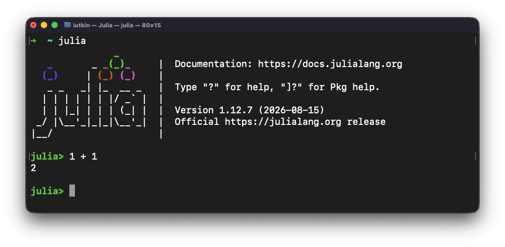
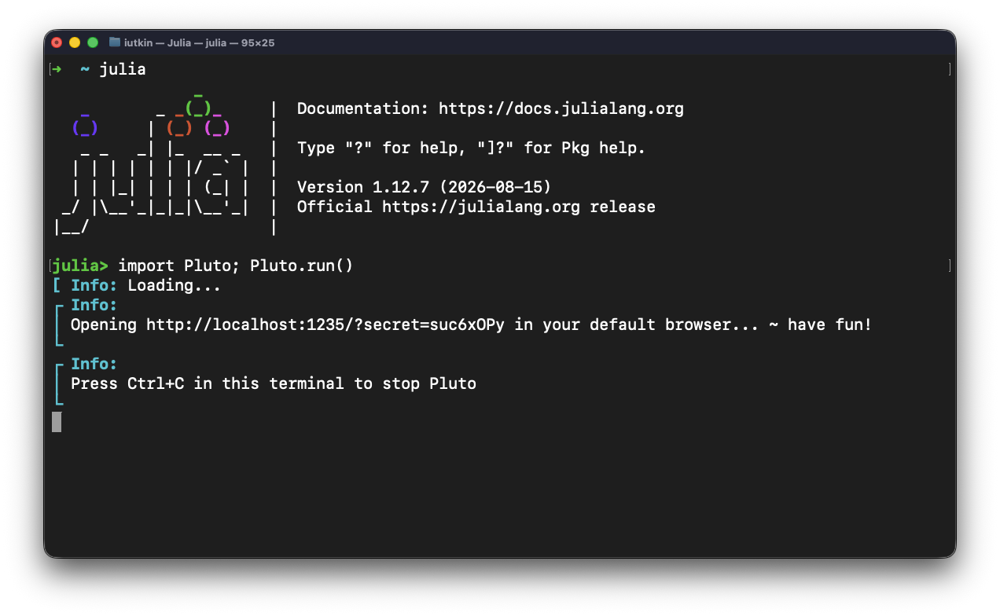

Software installation
Course slides and lecture material
All the course slides are reactive Pluto notebooks.
Code cells are executed by putting the cursor into the cell and hitting shift + enter. For more info see the documentation.
Exercises and homework
The first two lecture’s homework assignments will be Pluto notebooks. You can download the notebooks from Moodle and run them them locally. Starting from lecture 3, exercise scripts will be mostly standalone regular Julia scripts that have to be uploaded to your private GitHub repo (shared with the teaching staff only). Details in Logistics.
Installing Julia v1.12
Juliaup installer
Follow the instructions from the Julia Download page to install Julia v1.12 (which is using the Juliaup Julia installer under the hood).
Julia 1.13 is not yet supported
Pluto doesn’t support Julia 1.13 yet. Please install Julia 1.12 for the time being. After installing juliaup, type the following commmand in the terminal:
$ juliaup add 1.12
and after the installation completes, switch default Julia to 1.12 using this command:
$ juliaup default 1.12
For Windows users
When installing Julia 1.12 on Windows, make sure to check the “Add PATH” tick or ensure Julia is on PATH (see [help]). Julia’s REPL has a built-in shell mode you can access typing ; that natively works on Unix-based systems. On Windows, you can access the Windows shell by typing Powershell within the shell mode, and exit it typing exit, as described here.
Terminal + external editor
Ensure you have a text editor with syntax highlighting support for Julia. We recommend to use VSCode, see below. However, other editors are available too such as Sublime, Emacs, Vim, Helix, etc.
From within the terminal, type
julia
to make sure that the Julia REPL (aka terminal) starts. Then you should be able to add 1+1 and verify you get the expected result. Exit with Ctrl-d.

VS Code
If you’d enjoy a more IDE type of environment, check out VS Code. Follow the installation directions for the Julia VS Code extension.
VS Code Remote - SSH setup
VS Code’s Remote-SSH extension allows you to connect and open a remote folder on any remote machine with a running SSH server. Once connected to a server, you can interact with files and folders anywhere on the remote filesystem (more).
- To get started, follow the install steps.
- Then, you can connect to a remote host, using
ssh user@hostnameand your password (selectingRemote-SSH: Connect to Host...from the Command Palette). - Advanced options permit you to access a remote compute node from within VS Code.
Note
This remote configuration supports Julia graphics to render within VS Code’s plot pane. However, this “remote” visualisation option is only functional when plotting from a Julia instance launched as Julia: Start REPL from the Command Palette. Displaying a plot from a Julia instance launched from the remote terminal (which allows, e.g., to include custom options such as ENV variables or load modules) will fail. To work around this limitation, select Julia: Connect external REPL from the Command Palette and follow the prompted instructions.
Running Julia
First steps
Now that you have a running Julia install, launch Julia (e.g. by typing julia in the shell since it should be on path)
julia
Welcome in the Julia REPL (command window). There, you have 3 “modes”, the standard
[user@comp ~]$ julia
_
_ _ _(_)_ | Documentation: https://docs.julialang.org
(_) | (_) (_) |
_ _ _| |_ __ _ | Type "?" for help, "]?" for Pkg help.
| | | | | | |/ _` | |
| | |_| | | | (_| | | Version 1.12.7 (2026-08-15)
_/ |\__'_|_|_|\__'_| | Official https://julialang.org/ release
|__/ |
julia>
the shell mode by hitting ;, where you can enter Unix commands,
shell>
and the Pkg mode (package manager) by hitting ], that will be used to add and manage packages, and environments,
(@v1.12) pkg>
You can interactively execute commands in the REPL, like adding two numbers
julia> 2+2
4
julia>
Within this class, we will mainly work with Julia scripts. You can run them using the include() function in the REPL
julia> include("my_script.jl")
Alternatively, you can also execute a Julia script from the shell:
julia my_script.jl
Package manager
The Pkg mode permits you to install and manage Julia packages, and control the project’s environment.
Environments or Projects are an efficient way that enable portability and reproducibility. Upon activating a local environment, you generate a local Project.toml file that stores the packages and version you are using within a specific project (code-s), and a Manifest.toml file that keeps track locally of the state of the environment.
To activate an project-specific environment, navigate to your targeted project folder, launch Julia
mkdir my_cool_project
cd my_cool_project
julia
and activate it
julia> ]
(@v1.12) pkg>
(@v1.12) pkg> activate .
Activating new environment at `~/my_cool_project/Project.toml`
(my_cool_project) pkg>
Then, let’s install the CairoMakie.jl package
(my_cool_project) pkg> add CairoMakie
and check the status
(my_cool_project) pkg> st
Status `~/my_cool_project/Project.toml`
[13f3f980] CairoMakie v0.15.14
as well as the .toml files
julia> ;
shell> ls
Manifest.toml Project.toml
We can now load CairoMakie.jl and plot some random noise
julia> using CairoMakie
julia> heatmap(rand(10,10))
Let’s assume you’re handed your my_cool_project to someone to reproduce your cool random plot. To do so, you can open julia from the my_cool_project folder with the --project option
cd my_cool_project
julia --project
Or you can rather activate it afterwards
cd my_cool_project
julia
and then,
julia> ]
(@v1.12) pkg> activate .
Activating environment at `~/my_cool_project/Project.toml`
(my_cool_project) pkg>
(my_cool_project) pkg> st
Status `~/my_cool_project/Project.toml`
[13f3f980] CairoMakie v0.15.14
Here we go, you can now share that folder with colleagues or with yourself on another machine and have a reproducible environment 🙂
Install Pluto
Next we will install Pluto, the notebook environment that we will be using during the course. Pluto is a Julia programming environment designed for interactivity and quick experiments.
Open the Julia REPL. Switch from Julia mode to Pkg mode by typing ] (closing square bracket) at the julia> prompt:
julia> ]
(@v1.12) pkg>
To install Pluto, run the following (case sensitive) command to add (install) the package to your system by downloading it from the internet. You should only need to do this once for each installation of Julia:
(@v1.12) pkg> add Pluto
You can now close the terminal.
Use a modern browser: Mozilla Firefox or Google Chrome
We need a modern browser to view Pluto notebooks with. Firefox and Chrome work best.
Second time: Running Pluto & opening a notebook
Repeat the following steps whenever you want to work on a project or homework assignment.
Step 1: Start Pluto
Start the Julia REPL, like you did during the setup. In the REPL, type:
julia> using Pluto
julia> Pluto.run()

The terminal tells us to go to http://localhost:1234/ (or a similar URL). Let’s open Firefox or Chrome and type that into the address bar.

If you’re curious about what a Pluto notebook looks like, have a look at the Featured Notebooks. These notebooks are useful for learning some basics of Julia programming.
If you want to hear the story behind Pluto, have a look a the JuliaCon presentation.
If nothing happens in the browser the first time, close Julia and try again. And please let us know!
Step 2a: Opening a notebook from the web
This is the main menu - here you can create new notebooks, or open existing ones. Our homework assignments will always be based on a template notebook, available in this GitHub repository. To start from a template notebook on the web, you can paste the URL into the blue box and press ENTER.
For example, lecture 1 is available here. Go to this page, and on the top right, click on the button that says “Edit or run this notebook”. From these instructions, copy the notebook link, and paste it into the box. Press ENTER, and select OK in the confirmation box.

The first thing we will want to do is to save the notebook somewhere on our own computer; see below.
Step 2b: Opening an existing notebook file
When you launch Pluto for the second time, your recent notebooks will appear in the main menu. You can click on them to continue where you left off.
If you want to run a local notebook file that you have not opened before, then you need to enter its full path into the blue box in the main menu. More on finding full paths in step 3.
Step 3: Saving a notebook
We first need a folder to save our homework in. Open your file explorer and create one.
Next, we need to know the absolute path of that folder. Here’s how you do that in Windows and MacOS.
For example, you might have:
-
C:\Users\username\Documents\101-0250-01L_assignments\on Windows -
/Users/username/Documents/101-0250-01L_assignments/on MacOS -
/home/username/Documents/101-0250-01L_assignments/on Ubuntu
Now that we know the absolute path, go back to your Pluto notebook, and at the top of the page, click on “Save notebook…”.

This is where you type the new path+filename for your notebook:

Click Choose.
Step 4: Sharing a notebook
After working on your notebook (your code is autosaved when you run it), you will find your notebook file in the folder we created in step 3. This the file that you can share with others, or submit as your homework assignment to Canvas.
Multi-threading on CPUs
On the CPU, multi-threading is made accessible via Base.Threads. To make use of threads, Julia needs to be launched with
julia --project -t auto
which will launch Julia with as many threads are there are cores on your machine (including hyper-threaded cores). Alternatively set the environment variable JULIA_NUM_THREADS, e.g. export JULIA_NUM_THREADS=2 to enable 2 threads.
Julia on GPUs
The CUDA.jl module permits to launch compute kernels on Nvidia GPUs natively from within Julia. JuliaGPU provides further reading and introductory material about GPU ecosystems within Julia.